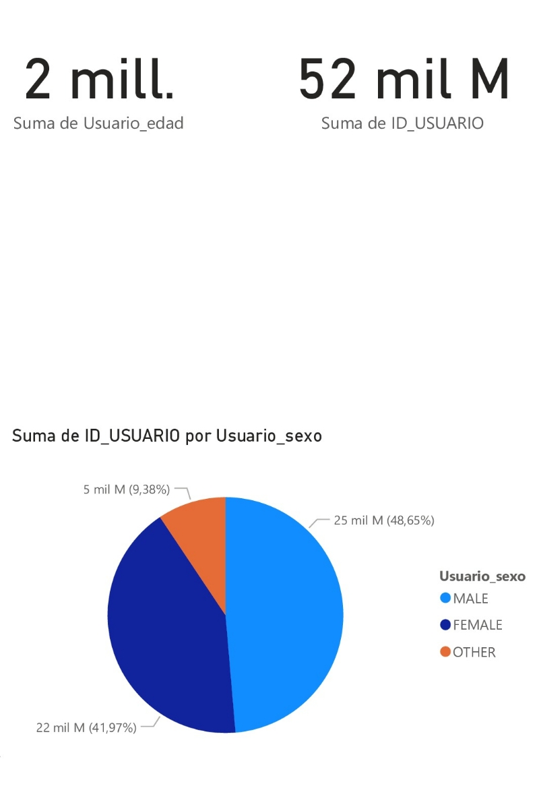
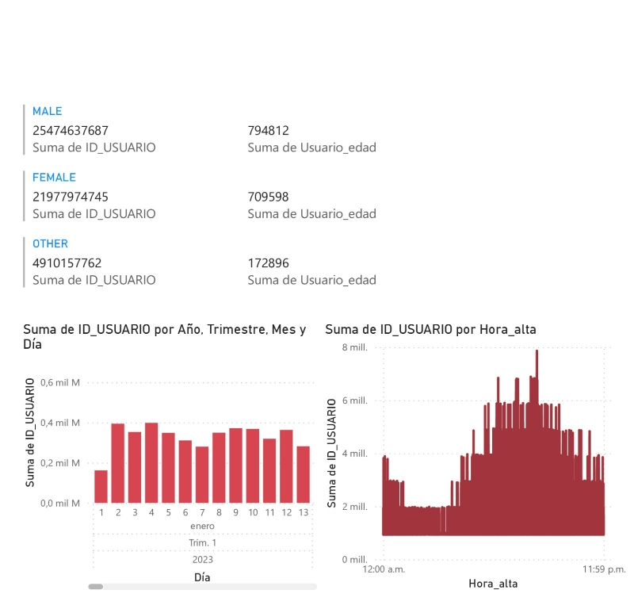

Analisis del Sistema
BIENVENIDOS A LOS DATOS ECOBICI
Acompáñenos en este emocionante viaje a través de los datos y estadísticas de las Ecobicis durante los
años 2022 y 2023. ¡Explora, aprende y sumérgete en el fascinante mundo de la movilidad sostenible con
nosotros!
EL SISTEMA
EcoBici es un sistema de bicicletas compartidas que funciona en la Ciudad de Buenos Aires, cuenta con 320
estaciones y 3.200 rodados y en 2023 más de 600.000 usuarios realizaron más de 8 millones de viajes
durante el año.
A partir de 2019, el sistema es operado por la empresa brasileña Tembici.
El 20 de Marzo de 2020 el sistema fue suspendido por la cuarentena decretada por el Gobierno Nacional.
En Mayo de 2020 el sistema fue restablecido a la mitad de su capacidad: 200 estaciones y 1000
bicicletas. El tiempo de uso gratuito fue reducido de una hora los días de semana y dos horas los
sábados y domingos a 30 minutos, mientras que el tiempo de espera para sacar una nueva bicicleta se
incrementó de 5 a 15 minutos.
Actualmente el sistema está presente en 30 de los 48 barrios de la Ciudad Autónoma de Buenos Aires,
funcionando los 365 días del año 24 horas.
Números del 2022
¡El año 2022 fue simplemente épico para las Ecobicis en la Ciudad de Buenos Aires! Se llevaron a cabo
más de 2 millones de viajes (¡exactamente 2.922.805!) que sumaron la increíble cantidad de más de UN
MILLÓN de horas de pedaleo. ¡Es como si hubiéramos visto mas de 80 mil veces la trilogía completa
del Señor de los Anillos o más de 50 mil veces la saga completa de Harry Potter!
Inflen las ruedas que llega la ¡Primavera!
La primavera es la estación del año más esperada y querida por los usuarios de Ecobici para explorar
la ciudad. Con el regreso de los días soleados y las temperaturas agradables, las calles se llenan
de risas y alegría sobre dos ruedas. Así que fanáticos del Team Invierno y Team Verano, dejen lugar
que ¡la primavera ocupa el podio este año!
El destino más elegido
En el corazón del barrio de Palermo, la estación "Pacífico" se alzó como la estrella indiscutible,
atrayendo a ciclistas apasionados con su encanto y ubicación privilegiada. Desde "Distrito Arcos",
hasta el mágico "Rosedal", pasando por el exótico "Ecoparque" y el inspirador "Jardín Botánico" e
incluso los centros comerciales se han unido a la lista de tesoros que esperan ser descubiertos en
esta encantadora estación y sus alrededores.
Así que, sin importar cuál sea tu elección, la ciudad de Buenos Aires te aguarda con una riqueza de
opciones para vivir experiencias únicas y emocionantes. ¡Súbete a tu Ecobici y emprende un viaje
lleno de nuevas aventuras!
Números del 2023
¡Vaya pedalazo en Buenos Aires! Este año las Ecobici conquistaron más de un millón trescientos mil
viajes, con un total de 486.282 horas recorridas a puro pedaleo, ¿El desafío? ¡Superar el alucinante
2022 y demostrar a todos quienes mandan sobre dos ruedas! ¡Así que subí a tu bici y pedalea con orgullo,
porque este año nos seguiremos superando!
¡WINTER IS COMING HERE!
¡Atención, atención! El verano está arrasando, con más de 700 mil viajes en Ecobici (superando al 2022 en
la misma estación por aproximadamente ¡30 mil viajes!), Pero, ¿qué dicen los miembros del Team Invierno?
¿Permitirán que el verano se quede con la corona? Aún queda tiempo para demostrar cuál es la mejor época
para andar en dos ruedas. ¡Que comience la batalla!
¡Rápidos y Furiosos! Descubriendo las horas pico de Ecobici
Las Ecobici tienen sus horarios de "locura" bien marcados. A partir de las 12 pm, las calles se llenan de
pedaleros con ansias de aventura. Pero espera, ¡no termina ahí! A las 18 pm, la demanda alcanza su
máximo esplendor, ¡y las bicis son las estrellas indiscutibles de la ciudad! Así que ya sabes ¡corre a
tu estación más cercana y que nadie te gane tu lugar!
Queremos hacer una mención de honor a aquellos pedaleros audaces de los horarios más tardíos (21 a 05
hs). Cuando la ciudad se sumerge en la tranquilidad de la noche, estos intrépidos ciclistas aparecen en
las calles con su energía y determinación. ¡Bravo a esos pedaleros nocturnos que suman un total de
207.516 viajes este año!
¡MUCHAACHOS AHORA NOS VOLVIMOS A ILUSIONAR…!
¡Redoble de tambores y ovación ciclista! ¡La estación de Ecobici "PACIFICO" se alza como campeón por
segundo año como destino preferido! y los ciclistas no pueden resistirse a su encanto. Con su ubicación
envidiable en Palermo y su ambiente único, ¡es como un imán para las ruedas! Desde novatos hasta
expertos, todos se rinden ante su espléndido pedalero. ¿Será qué el 2024 traerá su tercer triunfo?
¡…QUIERO GANAR LA TERCEEERA!
Género
Es levemente mayor el uso del sistema por parte de los hombres.
Si bien la diferencia no es amplia (41% vs 48%), es de destacar teniendo en cuenta que la población
de
la Ciudad de Buenos Aires está compuesta en proporciones inversas (46% de hombres y 54% de mujeres
entre
15 y 80 años según el último Censo Nacional).
Edad
- El usuario del sistema es joven.
- Cuatro de cada diez usuarios tienen entre 21 y 30 años de edad. Junto a los usuarios de 31 a 40
años, suman el 68% del total del sistema.
- Pasados los 32 años de edad, la cantidad de usuarios decae a medida que crece la edad.
- No hay diferencias significativas respecto del género.

